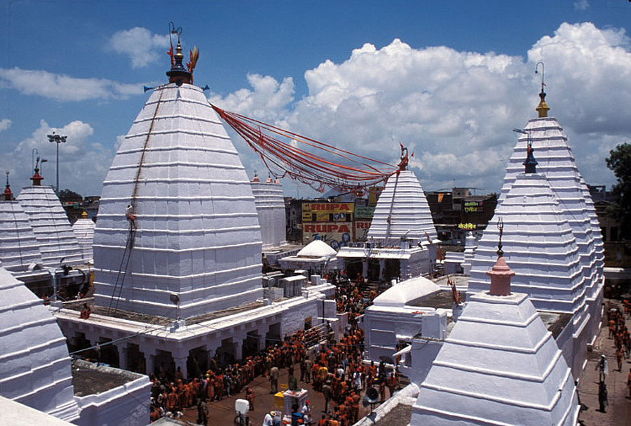
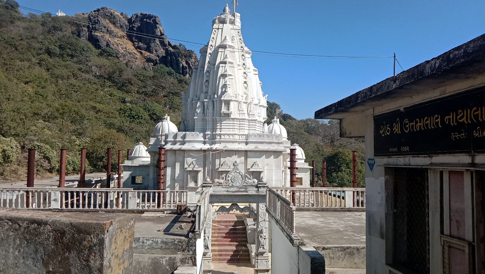
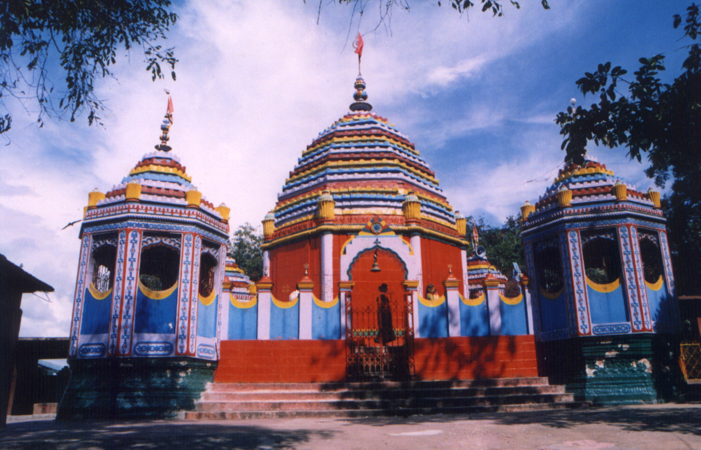

25Unbelievable Places to Visit in Jharkhand
Tourist place in jharkhand
Jharkhand, located in eastern India, is a land of natural beauty, ancient heritage, and rich tribal culture. Known as the "Land of Forests", it offers a perfect blend of scenic landscapes, waterfalls, temples, and wildlife, making it a unique destination for travelers. From nature lovers and adventure seekers to history enthusiasts, Jharkhand has something for everyone.
01 Baidyanath Dham (Deoghar)
🖤

1️⃣ Spiritual Significance
One of the 12 Jyotirlingas – extremely sacred for Hindus. The only place which is both a Jyotirlinga and a Shakti Peeth. Ideal for spiritual seekers, pilgrims, and devotees of Lord Shiva. The divine energy and peaceful atmosphere offer a unique spiritual experience.2️⃣ Festivals & Cultural Vibes
The Shravani Mela (July–August) attracts over 1 crore pilgrims each year — one of the largest religious gatherings in the world. You can witness traditional rituals, chanting, and cultural performances. The sight of Kanwariyas in saffron clothes walking 100 km to offer water to Shiva is unforgettable.3️⃣ Historical and Mythological Importance
Rich in legends, especially the story of Ravana and Lord Shiva. Ideal for those who love mythology, legends, and Indian epics. The architecture of the temple reflects ancient Indian temple design.4️⃣ Peaceful & Scenic Environment
Deoghar literally means "Abode of Gods" – the town is calm, green, and spiritually vibrant. Located away from metro city chaos, it offers mental peace and a relaxing environment. Clean surroundings and organized temple facilities enhance the experience.5️⃣Nearby Tourist Attractions
Besides Baidyanath Temple, you can explore: Place Highlights Tapovan Hills Caves and panoramic views Trikut Parvat Ropeway, hill views, and trekking Naulakha Mandir Built like Ramakrishna Math, scenic Basukinath Temple Twin pilgrimage site, 43 km away Nandan Pahar Children’s park and fun activities Satsang Ashram Spiritual place of Anukulchandra📍 Location
City: Deoghar State: Jharkhand Nearby Airport: Deoghar Airport (Domestic) Nearest Railway Station: Baidyanathdham/Deoghar Railway Station
👉visit to see nearby Hotel!
👇View Destination on Google Maps
02 Parasnath Hills
🖤

Parasnath Hills, also known as Shikharji, is the highest mountain range in Jharkhand, located in the Giridih district. It stands at a height of approximately 1,365 meters (4,478 feet) above sea level and is one of the most sacred pilgrimage sites for the Jain community. It is believed that 20 out of 24 Jain Tirthankaras (spiritual leaders) attained moksha (liberation) on this hill, making it a spiritually powerful destination. A Major Jain Pilgrimage Site Parasnath Hills is revered by both Digambara and Shwetambara sects of Jainism. The pilgrimage trek to the top is spiritual and scenic at the same time. The summit, known as Sammed Shikhar, is adorned with numerous Jain temples and shrines, each built in memory of the Tirthankaras who attained salvation there. Trekking & Route Details The trek to Parasnath Hill begins from Madhuban, a small village at the base of the hill. Pilgrims and tourists can take two routes: Main Trekking Route (27 km total) – via footpath through the forest. Pahad Yatra Route (9 km up) – shorter but steeper. The trek is surrounded by dense forests, panoramic views, and a peaceful environment ideal for meditation and reflection. Spiritual Atmosphere The entire area is filled with a divine calmness. During the trek, pilgrims chant mantras and bhajans, and the air resonates with the spiritual energy of centuries-old faith. There are temples like Jal Mandir, Tonk Temples, and Gautam Swami Tonk on the way, where devotees stop and offer prayers. Natural Beauty & Biodiversity Apart from its religious significance, Parasnath Hills is rich in flora and fauna. The forest is part of the Parasnath Wildlife Sanctuary, and the route offers a refreshing view of valleys, mountain peaks, and dense greenery. 📍How to Reach: Nearest Town: Giridih (25 km away) Nearest Railway Station: Parasnath Station (Isri Bazar) Nearest Airport: Ranchi or Gaya From the station, shared autos or taxis are available to Madhuban village. 👉visit to see nearby Hotel!
👇View Destination on Google Maps
03 Rajrappa Temple
🖤

Rajrappa Temple, located in Ramgarh district of Jharkhand, is one of the most mystical and powerful Shakti Peethas in India. It is dedicated to Goddess Chhinnamasta, an incarnation of Goddess Kali, who symbolizes self-sacrifice, courage, and divine energy. This temple is not only a religious center but also a fascinating destination for history, culture, and nature lovers. About Goddess Chhinnamasta The name Chhinnamasta means “She who is beheaded.” The goddess is depicted as standing over the bodies of Kama (desire) and Rati (passion), holding her severed head in one hand and a scimitar in the other, with three blood streams feeding her and her attendants. It is a symbol of self-control, victory over ego, and spiritual liberation. This form is rare and considered extremely tantric and powerful, which is why the temple attracts both devotees and mystics from all over India. Religious Significance Rajrappa is counted among the 51 Shakti Peethas of India. It is especially important in Tantric worship, where devotees perform sadhana (spiritual practice) seeking blessings from the goddess. On special days like Navratri, Kali Puja, and Tuesdays, the temple becomes heavily crowded. Note: Animal sacrifice (mainly goats) is still practiced here by some devotees as part of traditional beliefs. Spiritual & Cultural Experience The temple complex has multiple small shrines, including those of Shiva, Hanuman, Surya, and other deities. Nearby riverbanks are used for ritual baths, cremation, and pind daan. Local tribal and rural communities play a huge role in the temple’s cultural vibe. A special Rajrappa Mela (fair) is organized annually which showcases traditional tribal culture, folk songs, and local cuisine. 📍How to Reach: Nearest Town: Ramgarh (approximately 28 km away) Nearest Railway Station: Ramgarh Cantt Railway Station Nearest Airport: Birsa Munda Airport, Ranchi 👉visit to see nearby Hotel!
👇View Destination on Google Maps